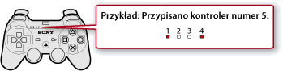

Gra > Granie przy użyciu oprogramowania w formacie PlayStation®3 > Zmiana ustawień gry
Zmiana ustawień gry
Ustawienia kontrolera można dostosowywać w trakcie gry. W trakcie gry naciśnij przycisk PS na kontrolerze bezprzewodowym, a następnie wybierz opcję  (Ustawienia) >
(Ustawienia) >  (Ustawienia akcesoriów).
(Ustawienia akcesoriów).
Ponownie przypisz kontroler
Można zmienić przypisany numer kontrolera. Jeśli numer kontrolera jest określony przez oprogramowanie, należy przypisać odpowiedni numer kontrolera.
Wskazówka
Aktualnie przypisany numer kontrolera można zobaczyć powyżej wskaźnika portu w górnej części kontrolera. W przypadku numeru z zakresu od pięć do siedem suma numerów powyżej świecących wskaźników jest numerem kontrolera.

Funkcja wibracji kontrolera
Funkcję wibracji można włączać i wyłączać. Opcja ta jest dostępna tylko wtedy, gdy używany jest kontroler obsługujący funkcję wibracji konsoli PS3™.
Wskazówki
- To ustawienie dotyczy wszystkich podłączonych kontrolerów obsługujących funkcję wibracji.
- Jeśli wartość tej opcji ustawiono na [Wył.], kontroler nie będzie generować wibracji nawet wtedy, gdy funkcja wibracji jest włączona w grze.